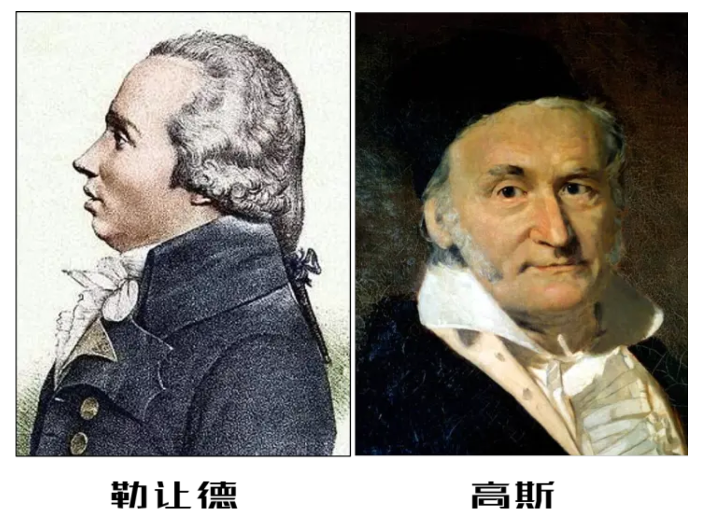
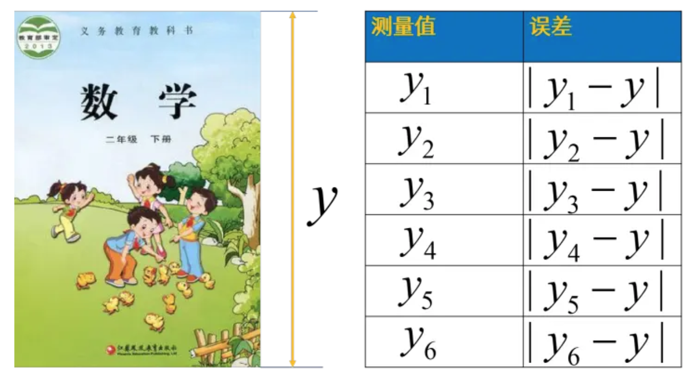

最小二乘法#
普通最小二乘法（ordinary least squares）[1][2]是一种数学优化方法，又称最小平方法。
逸闻趣事#
1801年，意大利天文学家朱赛普·皮亚齐发现了第一颗小行星谷神星。经过40天的跟踪观测后，由于谷神星运行至太阳背后，使得皮亚齐失去了谷神星的位置。随后全世界的科学家利用皮亚齐的观测数据开始寻找谷神星，但是根据大多数人计算的结果来寻找谷神星都没有结果。只有时年24岁的高斯（1777-1855）所计算的谷神星的轨道，被奥地利天文学家海因里希·奥尔伯斯的观测所证实，使天文界从此可以预测到谷神星的精确位置。同样的方法也产生了哈雷彗星等很多天文学成果。高斯使用的方法就是最小二乘法，该方法发表于1809年他的著作《天体运动论》中。其实早在1805，法国数学家勒让德(Legendre，Adrien-Marie)就在其著作《计算慧星轨道的新方法》中提出了“最小二乘法”。
勒让德（1752～1833）常被人戏称为“过渡性科学家”[3]。因为他的成就很快被别人推翻或者被更有天赋的人超越[4]。比如，最早由欧拉和勒让德提出的二次互反律，勒让德在1798年整理的《数论讲义》中给出了证明，但很快就被高斯找到了漏洞并否定了，之后又累计给出了至少7种不同证法。这让勒让德很受伤，而且自己也无力反驳。更致命的是，随着高斯经典巨著《算术探究》在1801年的出版，勒让德的《数论讲义》被取代，甚至其他的数论著作也被遗忘了。“最小二乘法”最早由勒让德发表于1805年的论文中，但是这次小高斯又出来让勒让德“受伤了”。高斯发文说他早在1795年就发现了这个方法，并在1801年结合此方法计算出了谷神星的运动轨迹。勒让德这一次真有些生气了，怎么什么都是你先发现的？还有完没完了。两人为了优先权争论了好几年。后来高斯将最小二乘法与概率论相结合提出了正态分布，由于这个概念的提出，高斯又走在了勒让德前面。
18世纪后半叶到20世纪初是数学史上的超英雄时代，此时的欧洲以法国为代表出现了大批的顶级数学家。我们来看看这些熟悉的名字：柯西（Cauchy，1789-1857），拉格朗日（Lagrange，1736~1813），拉普拉斯（Laplace,1749－1827)），蒙日（ Monge，1746～1818），泊松（ Poisson ，1781～1840）），傅里叶（Fourier，1768-1830），这些数学家都为法国的政治和科学做了巨大贡献，很多人甚至于是师徒或朋友的关系。勒让德在这个群星璀璨的时代，他的光芒被掩盖了，如果早生50年或者晚生50年都将是当时数学界最耀眼的明星。但实变函数之父勒让德在数学、物理、天文等多方面的成就必定是名垂青史的。

最小二乘法#
从小学二年测量数学课本边长开始，数学老师就告诉我们要多次测量取平均值，具体操作就是将几次测量结果加起来除以测量次数[2]。

这么做基于如下重要事实与假设：
真实值是无法得到的；
单次的测量误差是随机的；
为什么不用其他统计值（几何平均、调和平均）代表平均效果？
既然测量的误差是随机的，那么误差应该围绕真实值上下随机波动。
通常会假设观测误差符合正态分布，所以算术平均值代表平均效果。
为什么不用绝对误差而要用平方误差？即：\(|y - y_i| \rightarrow (y - y_i)^2\)
强调大误差：平方误差的平均值对较大的误差更敏感。
解析性质：使用平方误差可以更方便地进行分析和求导，从而找到函数值最小的极值点。
假设某次测量有n个观测（测量）值，那么测量值与真值之间的误差平方和\(R_n\)为：
注意此时只有真值y是不知道的。我们知道yi围绕y值随机地上下波动，问题就变成了如何根据已有数据确定y的值。
最小二乘法优化演示#
举例说明[2]：如下图所示，黄色数据为观测值，其算数平均值为5；红色横线为真值，因为真值不确定，所以让真值在数据间波动以寻找规律，发现当真值等于算数平均值时，误差平方和最小，以此作为真值。这是自洽的，也蛮符合直觉。因为如果误差是随机的，误差应该围绕着真值，真值应该使得误差平方和最小。
import numpy as np
import matplotlib.pyplot as plt
from IPython.display import clear_output, display
import time
np.random.seed(0)
n = 40
y_real = 5
frame = 50
x = np.arange(1, n+1)
# 随机偏移
bias = 1 - 2 * np.random.rand(n)
# 数据点
y_test = y_real + bias
# 创建图像和坐标轴对象
fig, ax = plt.subplots(figsize=(14, 8))
ax.set_facecolor('w')
# 拟合的曲线
y_appr = y_real - 1
for i in range(frame):
ax.clear()
# 绘制虚线
for j in range(n):
ax.plot([x[j], x[j]], [y_test[j], y_appr], linestyle='--', linewidth=0.5, color='gray')
# 绘制散点图
scatter = ax.scatter(x, y_test, color='b', facecolors='yellow', s=200)
# 绘制回归线
ax.axhline(y=y_appr, color='r')
# 计算误差
Rn = np.sum((y_appr - y_test)**2)
# 设置坐标轴范围和标签
ax.set_xlim(0, n+1)
ax.set_ylim(y_real-2, y_real+1.5)
ax.set_xlabel('x')
ax.set_ylabel('y')
# 设置标题
ax.set_title('orinary least squares'.format(Rn, y_appr))
ax.text(0.05, 0.1, '$R_n$={:.2f} \n $y$={:.2f}'.format(Rn, y_appr), transform=ax.transAxes,
fontsize=12, fontweight='bold', color='black')
# 清除上一帧的图像
clear_output(wait=True)
# 显示当前帧的图像
display(fig)
# 暂停一段时间
time.sleep(0.1)
# 更新预测值
y_appr += 1.5/frame
plt.close()
---------------------------------------------------------------------------
ModuleNotFoundError Traceback (most recent call last)
Cell In[1], line 1
----> 1 import numpy as np
2 import matplotlib.pyplot as plt
3 from IPython.display import clear_output, display
ModuleNotFoundError: No module named 'numpy'
论证：最小二乘法有极小值#
对于\(R_n\)求：
一阶导数 $\(\frac{{dR_n}}{{dy}} = \frac{{d}}{{dy}} \sum_{i=1}^{n}(y - y_i)^2\)$
使用链式法则，我们可以将求和符号中的每一项分别求导，然后将它们加起来：
二阶导数
再次应用链式法则，我们可以得到：
通过一阶导数为0的点来寻找Rn的极小值点（斜率为0，无变化）。
而通过二阶导数的正负性来确认极小值点的性质，即判断曲线在该点处是否向上弯曲（正-斜率变大，上弯曲；负-斜率变小，下弯曲）。
论证：极小值可以求得真实值y，且就是样本数据的算术平均值#
我们来解一阶导数为0的方程，以找到使得Rn取得极小值的y的值。
首先，我们设置一阶导数为0：
将等式两边除以2：
展开求和符号：
将等式重新排列：
最后，通过除以n，我们可以得到y的值：
这个方程表示了使得Rn取得极小值的y的值。具体来说，y的值等于y_i的平均值。
也就是说算术平均数可以让误差（欧几里得范数意义下）最小。
算数平均值只是最小二乘法应用的特例，可以看作是一组数据的0阶拟合，多项式拟合以及函数逼近就是更广泛一点的应用了。
扩展：最小二乘法的概率解释[5][6]#
极大似然估计[7]
根据极大似然估计的思想，我们是基于观测到的样本数据信息，寻找最有可能产生这些观测数据的参数值。具体而言，我们希望找到使得样本数据出现的概率最大的参数值。也就是说，通过调整参数值来使得该概率分布与观测数据最匹配。
为了实现这一目标，我们构建了一个关于参数的似然函数（likelihood function），它表示在给定参数值下观测数据出现的概率。然后，我们通过最大化似然函数来求解最有可能的参数值。以一开始的书本边长测量为例[2]，设测量误差为随机变量\(\epsilon_i = |y_i - y|\)，服从未知的概率分布\(p(\epsilon)\)，进而得到似然函数：
如果最小二乘是对的，那么：
推断的过程
通过极大似然估计的思想来确定未知的概率分布\(p(\epsilon)\)，这是一种统计推断问题。
在进行推断时，我们通常需要假设概率分布的形式或者给定某些假设条件。对于未知的概率分布\(p(\epsilon)\)，我们可以尝试假设它属于某个参数化的分布族，例如正态分布、指数分布等。
一种常见的方法是使用最大似然估计来估计参数化分布中的参数值，从而确定未知的概率分布\(p(\epsilon)\)。具体步骤如下：
假设概率分布\(p(\epsilon)\)属于一个已知的参数化分布族，并假设参数为\(\theta\)。
构建似然函数\(L(\theta)\)，它表示观测数据出现的概率关于参数\(\theta\)的函数。在这里，观测数据是样本误差\(\epsilon_i\)。
对似然函数\(L(\theta)\)取对数并求负，得到负对数似然函数\(-\log L(\theta)\)。
最大化负对数似然函数\(-\log L(\theta)\)，即通过对参数\(\theta\)进行优化来找到使得观测数据出现概率最大化的参数值。
设\(\epsilon\)为测量误差，由于\(\epsilon_i\)是独立同分布的，那么根据中心极限定理，误差的分布就应该是正态分布，我们假设\(\epsilon\)服从正态分布\(N(\mu, \sigma^2)\)，其中\(\mu\)是均值，\(\sigma\)是标准差。根据极大似然估计的思想，我们希望找到使得观测数据出现的概率最大化的\(\mu\)和\(\sigma\)。我们可以将似然函数写成：
为了最大化似然函数，我们可以取对数并将问题转化为最小化负对数似然函数。即求解以下方程：
我们可以通过对\(\mu\)和\(\sigma\)分别求偏导数并令导数等于零，来求解最大似然估计的参数。对于正态分布，最大似然估计将给出均值\(\mu\)和标准差\(\sigma\)的估计值。
最大似然估计会等价于最小化残差平方和，因为最大化观测数据的联合概率就等价于最小化负对数似然函数，而负对数似然函数与残差平方和成正比。
参考文献#
[1] 最小二乘法百度百科 https://baike.baidu.com/item/最小二乘法/2522346?fr=ge_ala
[2] 多方位理解最小二乘法|从均值到正态分布 https://www.bilibili.com/read/cv11596191/
[3] 勒让德：一个生在英雄时代，又被年轻高斯气得发狂的数学家 https://zhuanlan.zhihu.com/p/147641642
[4] 勒让德简介 https://baike.baidu.com/item/阿德利昂·玛利·埃·勒让德/8791520
[5] 最小二乘法的概率解释 https://blog.51cto.com/u_16146153/6387070
[6] 最小二乘法的概率解释-最大似然方法 https://www.cnblogs.com/shibalang/p/4974583.html
[7] 一文了解最大似然估计(Maximum Likelihood Estimation) https://mp.weixin.qq.com/s?__biz=MzI1MjQ2OTQ3Ng==&mid=2247604343&idx=1&sn=8659045f8c4279710a205da9303af5e8&chksm=e9e051fcde97d8ea1dc8cc716325c4e7c8ce7da52af653e8462039f51caa7ad7703805d18626&scene=27